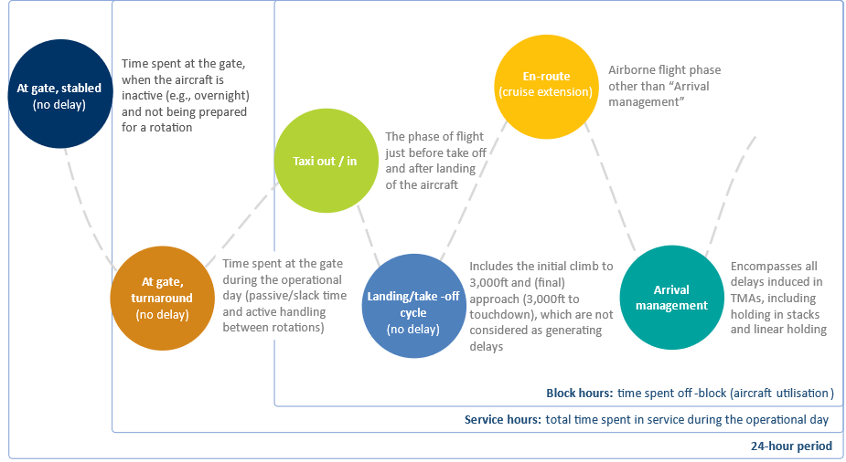

| Flight phase | All delays (0 to >300 min)1 | Short delays (<30 min)1 |
|---|---|---|
| Ground | ||
| At gate | €166 | €45 |
| Taxiing in/out | €182 | €62 |
| Airborne | ||
| En-route (cruise extension) | €212 | €89 |
| Arrival management | €206 | €84 |
| Source: calculated based on University of Westminster (2015), European airline delay cost reference values - version 4.1. Also available in 2004 iteration | ||
| 1 The monetary values are adjusted to 2022 prices based on inflation | ||
16 Cost of delay
16.1 EUROCONTROL recommended values
The tables below present an overview of the average cost per minute to the airline of ground or airborne delay of a commercial passenger flight. Please note that all the numbers are based on studies performed by the University of Westminster. Values in Table 16.1 and Table 16.2 are calculated on the basis of University of Westminster (UoW) reference values (European airline delay cost reference values report, version 4.1). Delay cost details by aircraft and length of delay, extracted from the UoW report, are given in Section 16.2.
The figures presented in this section constitute high-level averages and are valid as indicative estimates. It is strongly recommended that they are used as indicators or for general insights into delay costs and not for specific analyses or operational planning. Different values may be obtained for other contexts (e.g. other airspace areas or airports (hub or non-hub), etc.), with different aircraft and delay distributions.
| Flight phase | Cost per minute1 |
|---|---|
| Ground | |
| At-Gate | €17.78 |
| Taxi in / out | €46.69 |
| Airborne | |
| En-Route (cruise extension) | €82.95 |
| Source: calculated based on University of Westminster (2015), European airline delay cost reference values - version 4.1. Also available in 2004 iteration | |
| 1 The monetary values are adjusted to 2022 prices based on inflation | |
On top of the above, the network average cost of ATFM delay1 amounts €100 per minute.2
The University of Westminster (UoW) report, published in 2004 and updated in 2011 and 2015, represents the most recent and comprehensive appraisal of the cost of delay in the air traffic management system in Europe. The report is designed as a reference document for European delay direct costs incurred by airlines, both at strategic (planning) and tactical stages.
It contains a detailed assessment of the delay cost for 15 specific aircraft types (extended from 12 in the previous report versions), taking into account crew, fuel, fleet, maintenance, and passenger additional costs due to delay. Note that the list of aircraft used for this report does not include some recent types such as Airbus NEO Series, A220, A350 or B787.
In the study, costs are assigned under three cost scenarios: low, base, and high. These scenarios are designed to cover the probable range of costs for European operators. The base cost scenario is, to the greatest extent possible, designed to reflect the typical case and is, therefore, the one used in this value.
The University of Westminster report presents costs of delay in four flight phases: at gate, taxiing, en-route (cruise extension) and arrival management. For accuracy reasons, the definitions used by the University of Westminster are presented in Figure 19. They are extracted from the UoW 2004 and 2011 reports.
16.2 Flight phases, types of delay costs and calculation method used
Figure 16.1 describes the flight phases, types of delay costs and the calculation method used in the UoW study.

Types of delay costs
Tactical delay costs are incurred on the day of operations. In most cases, it is anticipated that the user will find it appropriate to use the full tactical costs in order to calculate these costs of delay. These include the reactionary costs of ‘knock-on’ delay in the rest of the network, i.e. the network effect, which it is usually pertinent to include.
Strategic delay costs are accounted for in advance. Strategic costs are typically used to assess the cost of adding buffers to schedules. This could be by airline choice or imposed by scheduling constraints at an airport (and thus considered a cost of congestion, albeit one which offsets tactical delay costs). Strategic costs may also be incurred as a consequence of factors which contribute to an increase in flight time in a predictable way, such as delay due to route design.
Calculation method
The tactical and strategic delay costs referred to in Table 16.1 and Table 16.2 are calculated based on the results extracted from the University of Westminster (UoW) study report “European airline delay cost reference values – Updated and extended values Version 4.1” – December 2015. Explicit cost tables for analytical use (up to 30 minutes of delay) are presented at the end of this section. The extended tables can be found in the UoW report mentioned above.
As regards tactical delay costs, these are given for 5, 15, 30, 60, 90, 120, 180, 240 and 300 minutes in the UoW report. These are scaled up to network level, because on the day of operations, original delays caused by one aircraft cause ‘knock-on’ effects in the rest of the network (reactionary delays).
Based on at-gate data provided by the Central Office for Delay Analysis (CODA) on ranges of departure delays by aircraft type for year 2014, assumptions have been made for the remaining three flight phases (i.e. taxi, en-route, and arrival management). The same delay distribution has been used as an assumption applicable to all flight phases.
The UoW results have been averaged by minute of delay per type of aircraft (15 in total) and further weighted by the distribution of the number of delayed flights per delay range, at departure, carried out by these aircraft in 2014.
Consequently, for each flight phase, two types of values have been calculated:
One taking into account long delays (i.e. 0 to more than 300 minutes)
One taking into account short delays (i.e. up to 30 minutes), which represent about 90% of all delays
As regards strategic delay, since costs at the strategic level are incorporated into the aircraft operator’s schedule in advance, they are associated with average costs and, therefore, only a distribution of the number of flights was applied in order to calculate the strategic high-level averages.
Use of costs in business cases
When comparing two scenarios, it is not correct to calculate the delay avoided as a benefit without taking into account the corresponding marginal cost of capacity. In other words, there is a delay threshold below which the marginal cost of capacity outweighs the delay avoidance benefit.
Every CBA should carefully consider whether the improvements envisaged by the project are of a tactical or strategic nature. For the correct use and precise understanding of the tactical and strategic delay concepts, see section 4 of, and Annex I to, the 2004 University of Westminster delay study.
16.2.1 Delay cost details by aircraft type and duration
In the tables below are presented the explicit cost data as extracted from University of Westminster study and adjusted to 2022 prices.
| Aircraft type | At gate | Taxiing | En-route | Arrival management | ||||||||
|---|---|---|---|---|---|---|---|---|---|---|---|---|
| 5' | 15' | 30' | 5' | 15' | 30' | 5' | 15' | 30' | 5' | 15' | 30' | |
| A319 | €83 | €523 | €1,901 | €154 | €724 | €2,305 | €286 | €1,128 | €3,112 | €262 | €1,057 | €2,982 |
| A320 | €95 | €594 | €2,162 | €178 | €844 | €2,672 | €297 | €1,199 | €3,386 | €297 | €1,187 | €3,350 |
| A321 | €119 | €689 | €2,566 | €201 | €927 | €3,041 | €357 | €1,414 | €4,015 | €333 | €1,343 | €3,873 |
| A332 | €213 | €1,176 | €4,218 | €404 | €1,722 | €5,310 | €677 | €2,542 | €6,961 | €558 | €2,185 | €6,237 |
| AT43 | €36 | €213 | €724 | €71 | €309 | €915 | €83 | €345 | €986 | €83 | €345 | €986 |
| AT72 | €47 | €286 | €974 | €83 | €392 | €1,199 | €107 | €463 | €1,343 | €107 | €440 | €1,295 |
| B733 | €83 | €511 | €1,842 | €166 | €749 | €2,317 | €297 | €1,140 | €3,112 | €250 | €1,010 | €2,851 |
| B734 | €95 | €570 | €2,067 | €178 | €820 | €2,577 | €309 | €1,199 | €3,326 | €297 | €1,164 | €3,243 |
| B735 | €83 | €463 | €1,663 | €166 | €712 | €2,150 | €274 | €1,045 | €2,816 | €213 | €879 | €2,483 |
| B738 | €107 | €641 | €2,305 | €178 | €856 | €2,745 | €321 | €1,283 | €3,599 | €297 | €1,211 | €3,457 |
| B744 | €286 | €1,627 | €5,939 | €546 | €2,400 | €7,484 | €1,104 | €4,086 | €10,857 | €844 | €3,279 | €9,242 |
| B752 | €119 | €736 | €2,720 | €237 | €1,093 | €3,445 | €404 | €1,592 | €4,431 | €345 | €1,402 | €4,062 |
| B763 | €201 | €1,069 | €3,802 | €345 | €1,497 | €4,656 | €606 | €2,281 | €6,225 | €570 | €2,173 | €6,022 |
| DH8D | €47 | €297 | €1,057 | €83 | €404 | €1,272 | €130 | €534 | €1,520 | €130 | €534 | €1,520 |
| E190 | €71 | €380 | €1,366 | €130 | €558 | €1,722 | €213 | €832 | €2,269 | €213 | €820 | €2,234 |
| Source: University of Westminster (2015), European airline delay cost reference values - version 4.1 | ||||||||||||
| Aircraft type | At gate | Taxiing | En-route |
|---|---|---|---|
| A319 | €962 | €2,281 | €4,062 |
| B734 | €1,069 | €2,566 | €4,145 |
| B735 | €1,248 | €2,756 | €4,906 |
| B738 | €2,043 | €5,036 | €8,576 |
| B752 | €274 | €891 | €1,069 |
| B763 | €404 | €1,164 | €1,509 |
| B744 | €641 | €2,031 | €3,802 |
| A319 | €712 | €2,221 | €3,908 |
| A320 | €606 | €2,031 | €3,504 |
| A321 | €1,199 | €2,459 | €4,336 |
| AT43 | €1,782 | €5,892 | €13,007 |
| AT72 | €856 | €2,839 | €5,001 |
| DH8D | €1,556 | €4,015 | €7,401 |
| E190 | €641 | €1,354 | €1,936 |
| A332 | €915 | €2,043 | €3,267 |
| Source: University of Westminster (2015), European airline delay cost reference values - version 4.1 | |||
16.3 When to use the input?
This input is suitable for calculation of the cost of a delayed flight on airspace users.
ATFM delay is defined as the duration between the last take-off time requested by the aircraft operator and the take-off slot allocated by the Network Manager following a regulation communicated by the flow management position (FMP), in relation to an airport (airport ATFM delay) or sector location (en route ATFM delay).↩︎
This value is a reference extracted from a University of Westminster report (European airline delay cost reference values report, version 4.1). Please note that this is an average overarching value and should be regarded as such.↩︎